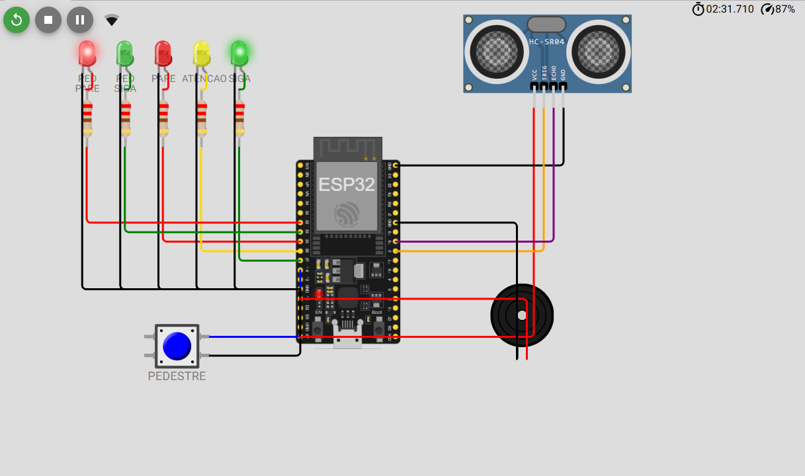
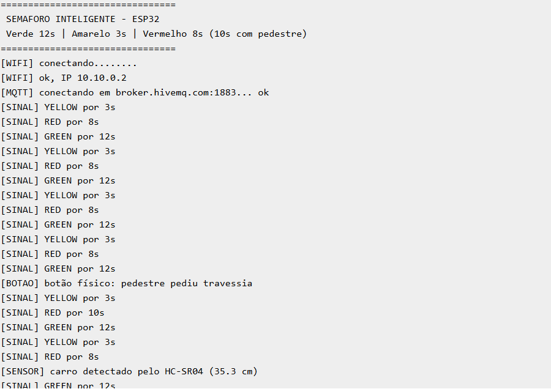
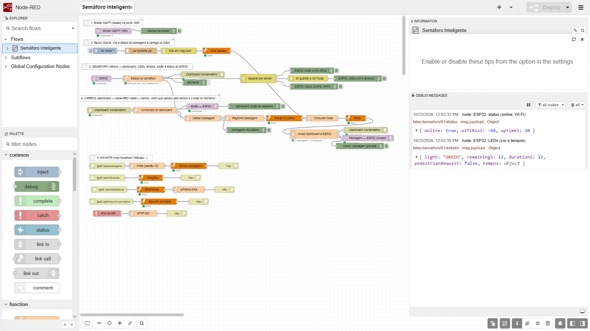
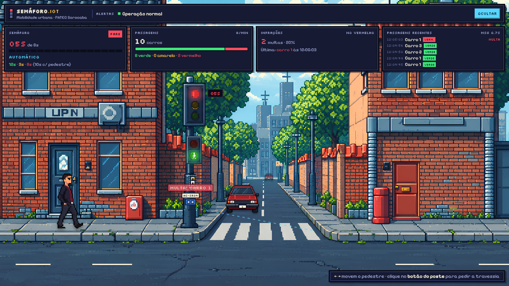
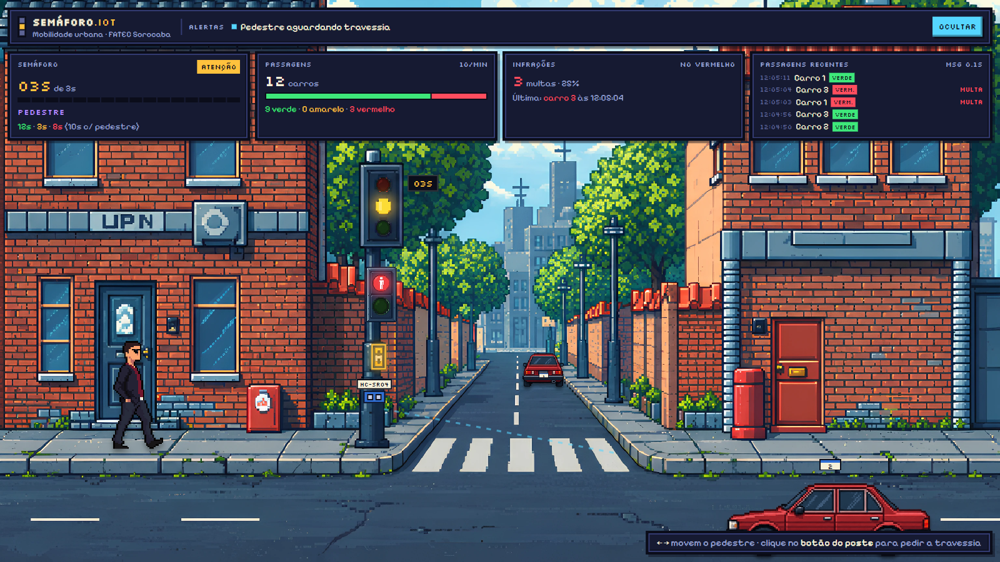
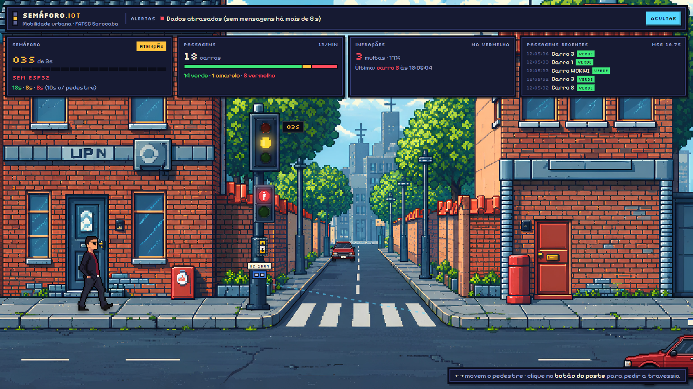

| Nome do projeto | Semáforo Inteligente – monitoramento de trânsito e travessia de pedestres com IoT |
| Integrantes | Isabella Ferreira Gomes da Silva Matheus Cuero Silva Mike Willy Franguelli Thomas Lourenço Lopes de Castro |
| Instituição / disciplina | FATEC Sorocaba – Programação Multiplataforma |
| Turma | 5º ADS AMS – FATEC |
| Professor | Emerson de Oliveira Rocha |
| Data da apresentação | 06/11/2026 |
| Repositório | https://github.com/BellaFGS/Projeto_IOT_Semafaro |
| Dashboard on-line (GitHub Pages) | https://bellafgs.github.io/Projeto_IOT_Semafaro/?fonte=simulacao |
Desenvolver e documentar uma solução IoT completa, utilizando ESP32, simulação no Wokwi, desenvolvimento no PlatformIO, comunicação MQTT, processamento no Node-RED e apresentação dos dados em um Dashboard, registrando o desenvolvimento de cada etapa e as evidências de funcionamento.
| Item | Definição do grupo |
|---|---|
| Problema real | Cruzamentos urbanos com pouca informação sobre o fluxo de veículos, avanços de sinal vermelho e risco para pedestres, que muitas vezes esperam um ciclo fixo sem poder pedir a travessia. |
| Objetivo geral | Criar um semáforo conectado que controla o ciclo veicular, atende pedidos de travessia de pedestres, registra cada passagem de veículo com a cor do sinal, identifica infrações e exibe tudo em tempo real em um dashboard. |
| Público / situação de uso | Órgãos de trânsito e prefeituras (monitoramento de cruzamentos), pedestres em faixas de travessia e uso educacional para demonstrar uma arquitetura IoT completa. |
| Sensores | Sensor ultrassônico HC-SR04 (detecção de veículo < 50 cm) e botão de pedestre. |
| Atuadores | 3 LEDs do semáforo veicular (vermelho, amarelo, verde), 2 LEDs do semáforo de pedestres (vermelho, verde) e buzzer. |
| Dados monitorados | Cor atual e tempo restante do sinal, pedido de pedestre, status do ESP32 (online, RSSI do Wi-Fi, uptime), detecções do HC-SR04, passagens de veículos (placa, horário, cor do sinal). |
| Informações no Dashboard | Semáforo com contagem regressiva e tempos, total de passagens e taxa por minuto, distribuição por cor, infrações (quantidade, % e última), histórico de passagens recentes, alertas e status de comunicação. |
| Alertas e automações | Passagem no vermelho = infração (aviso “MULTA!” + 3 bipes no ESP32); passagem no verde/amarelo = 1 bipe; pedido de pedestre encurta o verde para até 3 s e estende o vermelho para 10 s; alertas de dados atrasados (> 8 s sem mensagens), ESP32 offline (Last Will MQTT) e Node-RED desconectado. |
Em muitos cruzamentos não há dados sobre quantos veículos passam, em qual cor do sinal e com que frequência ocorrem avanços no vermelho. Pedestres também dependem de ciclos fixos, aumentando o tempo de espera e o risco de travessias inseguras.
Demonstrar, com um ESP32 simulado no Wokwi, um semáforo inteligente que publica seu estado via MQTT, recebe comandos (botão virtual de pedestre), tem os eventos validados e gravados pelo Node-RED em SQLite e é acompanhado em um dashboard web interativo que mostra estado, estatísticas, infrações e alertas em tempo real.
┌──────────────────┐ MQTT :1883 ┌─────────────────────────┐ WebSocket :1880 ┌────────────────────┐
│ ESP32 (Wokwi) │ ──────────────▶ │ Node-RED + broker Aedes │ ────────────────▶ │ Dashboard React │
│ LEDs, botão, │ ◀────────────── │ regras / validação │ ◀──────────────── │ (Vite :5173 / │
│ HC-SR04, buzzer │ comandos │ API HTTP /api/... │ passagens/botão │ GitHub Pages) │
└──────────────────┘ └────────────┬────────────┘ └────────────────────┘
│ SQL
┌─────▼─────┐
│ SQLite │ tabela passagens + views
└───────────┘
Fluxo do semáforo: ESP32 → MQTT → Node-RED → WebSocket → dashboard. Fluxo de passagem: carro simulado no dashboard → WebSocket → validação no Node-RED → SQLite → confirmação ao dashboard e comando MQTT ao ESP32 (buzzer).
Objetivo: montar, conectar e testar virtualmente o circuito antes da implementação.
Foi utilizada a placa ESP32 DevKit C v4 no simulador Wokwi, executado pela extensão Wokwi Simulator do VS Code (o projeto foi desenvolvido dentro desse ambiente, com o firmware compilado pelo PlatformIO e carregado via wokwi.toml). O circuito está descrito em wokwi/diagram.json:
| Componente | Função | GPIO do ESP32 | Observação |
|---|---|---|---|
| LED vermelho “PARE” | Semáforo veicular | 25 | Resistor 220 Ω |
| LED amarelo “ATENÇÃO” | Semáforo veicular | 26 | Resistor 220 Ω |
| LED verde “SIGA” | Semáforo veicular | 27 | Resistor 220 Ω |
| LED vermelho “PED PARE” | Semáforo de pedestres | 32 | Resistor 220 Ω |
| LED verde “PED SIGA” | Semáforo de pedestres | 33 | Resistor 220 Ω |
| Botão “PEDESTRE” | Pedido de travessia | 14 | INPUT_PULLUP, debounce 50 ms |
| Sensor ultrassônico HC-SR04 | Detecção de veículo | TRIG 5 / ECHO 18 | Limiar < 50 cm |
| Buzzer | Alerta sonoro | 13 | 1760 Hz, bipes de 90 ms |
| Sensor | Valor | Unidade | Resultado / observação |
|---|---|---|---|
| HC-SR04 (sem veículo) | 320 | cm | OK – distância padrão do diagrama, acima do limiar; nenhum evento gerado. |
| HC-SR04 (veículo simulado) | 35,3 | cm | OK – publica em sensor/veiculo; o Node-RED registra passagem com placa WOKWI. |
| Botão de pedestre | LOW (pressionado) | nível lógico | OK – publica {"pressed":true}; verde encerra em até 3 s e o vermelho seguinte dura 10 s. |
| Wi-Fi (Wokwi-GUEST) | ≈ -58 a -68 | dBm | OK – RSSI enviado no tópico status a cada 10 s. |
Testes realizados: com a simulação em execução, o slider do HC-SR04 foi movido abaixo de 50 cm e verificou-se a mensagem no Monitor Serial ([SENSOR] carro detectado pelo HC-SR04) e o registro no banco. O botão foi pressionado durante o verde, no amarelo e no vermelho: no verde o ciclo foi antecipado; no vermelho o pedido foi ignorado, conforme a regra. Os LEDs de pedestre acenderam de forma inversa ao semáforo veicular.

diagram.json em simulação no Wokwi: semáforo veicular em VERDE (SIGA) e pedestre em PARE; HC-SR04, botão PEDESTRE e buzzer ligados ao ESP32.Para gerar os prints, o mesmo diagram.json e o mesmo código (main.cpp + config.h) foram carregados no wokwi.com, com as bibliotecas PubSubClient e ArduinoJson. A única diferença é o broker: no navegador não existe o host.wokwi.internal da extensão do VS Code, então foi usado broker.hivemq.com:1883.
semaforo-inteligente/wokwi/diagram.json e wokwi.toml no repositório.wokwi/src/main.cpp e wokwi/include/config.h (Etapa 4).WOKWI na API (Etapa 5) e Figuras 1, 2 e 6.Objetivo: desenvolver e testar o código do ESP32.
O firmware foi escrito em C++ (framework Arduino) no PlatformIO, ambiente esp32dev, com as bibliotecas PubSubClient (MQTT) e ArduinoJson 7. Todas as configurações (rede, broker, tópicos, pinos, tempos e limiares) ficam centralizadas em include/config.h, e a lógica em src/main.cpp. O loop() não usa delay(): cada tarefa roda por intervalo com millis(), para que o semáforo continue funcionando mesmo se a rede cair.
wokwi/ ├── platformio.ini → [env:esp32dev], monitor 115200, PubSubClient + ArduinoJson@^7 ├── wokwi.toml → firmware = .pio/build/esp32dev/firmware.bin / .elf ├── diagram.json → circuito do Wokwi ├── include/config.h → Wi-Fi, broker, tópicos, pinos, tempos (12/3/8/10 s), limiar 50 cm └── src/main.cpp → lógica do semáforo, MQTT, sensores e buzzer
| Função | Responsabilidade |
|---|---|
setup() | Configura pinos, acende o estado inicial, conecta Wi-Fi e MQTT. |
loop() | Reconecta Wi-Fi/MQTT (a cada 3 s), lê botão, lê sensor a cada 300 ms, avança o relógio do semáforo a cada 1 s e publica status a cada 10 s. |
applyLeds() / nextLight() | Acende os LEDs veiculares e de pedestre; ciclo verde → amarelo → vermelho com os tempos configurados. |
requestPedestrian() | Atende o pedido de travessia (botão físico ou virtual): limita o verde a 3 s e marca vermelho de 10 s. |
handleButton() / handleSensor() / readDistanceCm() | Leitura do botão com debounce e do HC-SR04 com detecção de borda (só publica quando o carro chega). |
publishState() / publishStatus() / publishJson() | Montagem dos JSON e publicação MQTT; status retido. |
connectWifi() / connectMqtt() | Conexão à rede Wokwi-GUEST e ao broker com Last Will {"online":false}. |
onMqttMessage() / beep() | Recebe comandos (botao_virtual, passagem) e emite 1 bipe (verde/amarelo) ou 3 bipes (infração). |
void loop() {
if (WiFi.status() != WL_CONNECTED) connectWifi();
if (!mqtt.connected() && now - lastMqttTry > 3000) { lastMqttTry = now; connectMqtt(); }
mqtt.loop();
handleButton(now);
if (now - lastSensorMs >= SENSOR_INTERVAL_MS) { lastSensorMs = now; handleSensor(); }
if (now - lastSecondMs >= 1000) { lastSecondMs = now; if (--remainingS <= 0) nextLight(); publishState(); }
if (now - lastStatusMs >= STATUS_INTERVAL_MS) { lastStatusMs = now; publishStatus(); }
}
| Teste | Resultado / observação |
|---|---|
| ESP32 iniciou corretamente | OK – banner “SEMAFORO INTELIGENTE – ESP32” com os tempos 12/3/8 (10) s no Monitor Serial. |
| Sensores funcionando | OK – HC-SR04 detecta abaixo de 50 cm; botão gera o pedido de travessia. |
| Wi-Fi conectado | OK – [WIFI] ok, IP 10.10.0.2 na rede Wokwi-GUEST (Figura 2). |
| MQTT conectado | OK – [MQTT] conectando em ...:1883... ok (host.wokwi.internal no VS Code; broker.hivemq.com na Figura 2). |
| Monitor serial apresentando dados | OK – mensagens [SINAL], [BOTAO], [SENSOR] e [PASSAGEM] em 115200 baud. |
Monitor Serial da simulação (115200 baud): inicialização, conexão Wi-Fi e MQTT, ciclo do semáforo, pedido de pedestre pelo botão físico (vermelho passa a 10 s) e detecção do HC-SR04 a 35,3 cm:

semaforo-inteligente/wokwi/ do repositório.Objetivo: estabelecer a comunicação entre ESP32, broker e demais componentes do sistema.
Broker: Aedes embutido no Node-RED (node-red-contrib-aedes), porta 1883. Dentro do Wokwi o ESP32 acessa o computador pelo host host.wokwi.internal. Prefixo dos tópicos: fatec/semaforo/01.
| Função | Tópico MQTT | Direção | Frequência |
|---|---|---|---|
| Estado do semáforo (cor, tempo restante, tempos, pedido de pedestre) | fatec/semaforo/01/estado | ESP32 → Node-RED | 1 s |
| Status do dispositivo (online, RSSI, uptime) – retido + Last Will | fatec/semaforo/01/status | ESP32 → Node-RED | 10 s |
| Botão físico de pedestre | fatec/semaforo/01/sensor/botao | ESP32 → Node-RED | evento |
| Veículo detectado pelo HC-SR04 | fatec/semaforo/01/sensor/veiculo | ESP32 → Node-RED | evento |
| Botão virtual de pedestre (dashboard) | fatec/semaforo/01/cmd/botao_virtual | Node-RED → ESP32 | evento |
| Confirmação de passagem registrada (aciona buzzer) | fatec/semaforo/01/cmd/passagem | Node-RED → ESP32 | evento |
O ESP32 monta os payloads em JSON com ArduinoJson e publica com PubSubClient. O nó mqtt in do Node-RED assina fatec/semaforo/01/#, um switch separa as mensagens por tópico e a função “Estado do semáforo” guarda o estado oficial e gera a telemetria enviada ao dashboard por WebSocket (ws://localhost:1880/ws/semaforo). No sentido inverso, os comandos do dashboard chegam por WebSocket e o Node-RED publica nos tópicos cmd/..., que o ESP32 assina. O status é publicado com retain e há Last Will: se o ESP32 cair, o broker publica {"online":false} e o dashboard mostra “SEM ESP32”.
| Exemplo | Conteúdo |
|---|---|
| Tópico | fatec/semaforo/01/estado |
| Mensagem | {"light":"GREEN","remainingS":9,"durationS":12,"pedestrianRequest":false,"tempos":{"verde":12,"amarelo":3,"vermelho":8,"vermelhoPedestre":10}} |
Mensagens capturadas por um cliente assinante de fatec/semaforo/01/# durante o teste de integração. (Nesta captura o dispositivo foi o script esp32-fake do projeto, que publica exatamente os mesmos tópicos e JSON do firmware; a última linha foi publicada manualmente no tópico do HC-SR04.)
12:03:12 fatec/semaforo/01/status {"online":true,"wifiRssi":-58,"uptimeS":0}
12:03:13 fatec/semaforo/01/estado {"light":"GREEN","remainingS":11,"durationS":12,"pedestrianRequest":false,"tempos":{...}}
12:03:22 fatec/semaforo/01/status {"online":true,"wifiRssi":-59,"uptimeS":10}
12:05:04 fatec/semaforo/01/cmd/passagem {"placa":"3","sinal":"RED","infracao":true}
12:05:11 fatec/semaforo/01/cmd/passagem {"placa":"1","sinal":"GREEN","infracao":false}
12:05:12 fatec/semaforo/01/cmd/botao_virtual {"pressed":true}
12:05:12 fatec/semaforo/01/sensor/botao {"pressed":true}
12:05:17 fatec/semaforo/01/cmd/passagem {"placa":"2","sinal":"YELLOW","infracao":false}
12:05:33 fatec/semaforo/01/sensor/veiculo {"distanceCm":32.5}
Recebimento das mensagens no Node-RED (painel Debug, à direita na Figura 3): fatec/semaforo/01/status : {online: true, wifiRssi: -68, uptimeS: 20} e fatec/semaforo/01/estado : {light: "GREEN", remainingS: 12, durationS: 12, ...}.
Objetivo: receber, processar, aplicar regras e encaminhar os dados.

O fluxo (node-red/flows.json) está organizado em cinco blocos comentados:
| Bloco | Funcionamento |
|---|---|
| 1. Broker MQTT | Nó aedes broker na porta 1883; o próprio Node-RED se conecta a ele como cliente. |
| 2. Banco SQLite | Ao iniciar (inject), lê database/schema.sql, cria tabela, índices e views e carrega os totais. |
| 3. Semáforo (Wokwi → dashboard) | mqtt in → função “Estado do semáforo” → WebSocket /ws/semaforo. Um switch separa botão/HC-SR04, LEDs e status; um nó rbe registra apenas quando a cor muda. |
| 4. Carros (dashboard → banco) | WebSocket in → “Comandos do dashboard” → “Validar passagem” → “Registrar passagem” → SQLite → “Consultar totais” → avisa o dashboard e publica cmd/passagem ao ESP32 (buzzer). O botão virtual é publicado em cmd/botao_virtual. |
| 5. API HTTP | GET /api/passagens?limite=10, /api/infracoes, /api/estatisticas, /api/resumo-por-placa, com tratamento de erro (catch → HTTP 500). |
1, 2, 3 ou WOKWI.infracao: true → 3 bipes no ESP32 e aviso “MULTA!”).WOKWI.
GET /api/estatisticas
{"total":18,"verde":14,"amarelo":1,"infracoes":3,"passagens_hoje":18,"infracoes_hoje":3}
GET /api/infracoes
[{"id":11,"registrado_em":"2026-10-23T15:05:04.707Z","placa":"3"},
{"id":10,"registrado_em":"2026-10-23T15:05:03.756Z","placa":"1"},
{"id":3, "registrado_em":"2026-10-23T15:04:16.125Z","placa":"3"}]
GET /api/resumo-por-placa
[{"placa":"1","passagens":7,"no_verde":6,"no_amarelo":0,"infracoes":1},
{"placa":"2","passagens":5,"no_verde":4,"no_amarelo":1,"infracoes":0},
{"placa":"3","passagens":5,"no_verde":3,"no_amarelo":0,"infracoes":2},
{"placa":"WOKWI","passagens":1,"no_verde":1,"no_amarelo":0,"infracoes":0}]
semaforo-inteligente/node-red/flows.json.Objetivo: apresentar os dados de forma visual, clara e útil. Desenvolvido em React 19 + TypeScript + Vite, com cena em pixel art (rua, semáforos, carros animados e pedestre controlado pelas setas / A-D). Publicado também no GitHub Pages em modo simulação: https://bellafgs.github.io/Projeto_IOT_Semafaro/?fonte=simulacao.
| Elemento | Implementação |
|---|---|
| Valores dos sensores | Cor atual e contagem regressiva do ESP32 (card “Semáforo” e display no poste); passagens detectadas, inclusive pelo HC-SR04 (“Carro WOKWI”). |
| Gráficos | Barra de distribuição das passagens por cor (verde / amarelo / vermelho). |
| Indicadores | Total de carros, taxa por minuto, multas e percentual de infrações, tempos do ciclo, modo (AUTOMÁTICO / PEDESTRE / SEM ESP32), idade da última mensagem. |
| Alertas | Barra de alertas: “Operação normal”, “Pedestre aguardando travessia”, “Dados atrasados”, ESP32 offline, Wi-Fi fraco, Node-RED desconectado; aviso “MULTA!” sobre o carro infrator e som no navegador. |
| Status dos dispositivos | Online/offline do ESP32 (Last Will), RSSI do Wi-Fi e conexão WebSocket com o Node-RED. |
| Histórico | Lista “Passagens recentes” com horário, carro, cor do sinal e marcação MULTA; histórico completo pela API. |
| Controle dos atuadores | Botão de pedestre no poste: envia cmd/botao_virtual ao ESP32, que altera o ciclo dos LEDs. |
O usuário lê o estado do cruzamento de cima para baixo: a barra de alertas resume a situação (verde = normal, azul = pedestre, vermelho = problema de comunicação); o card Semáforo mostra a cor oficial do ESP32 e quanto tempo falta; Passagens e Infrações mostram o volume e quantos carros avançaram no vermelho; Passagens recentes traz cada evento com a cor e a marcação MULTA. Na cena, o semáforo, o display de segundos e os carros reproduzem visualmente o mesmo estado.



cmd/botao_virtual (Etapa 5).Objetivo: validar o fluxo completo e preparar a demonstração.
| Teste | Procedimento | Resultado esperado | Resultado obtido |
|---|---|---|---|
| Sincronização | Iniciar Wokwi, Node-RED e dashboard | Luzes da interface acompanham o ESP32 | Aprovado |
| Respeito ao sinal | Aguardar o vermelho | Carros param na faixa e retomam no verde | Aprovado |
| Passagem | Aguardar um carro cruzar o sensor virtual | Registro no banco, atualização do painel e 1 bipe | Aprovado |
| Infração | Aguardar um carro avançar no vermelho | Aviso “MULTA!”, contagem de infrações e 3 bipes | Aprovado (Fig. 4) |
| Pedestre | Acionar o botão durante o verde | Verde encerra em até 3 s e vermelho dura 10 s | Aprovado (Fig. 5) – botão às 12:05:12, amarelo às 12:05:15, vermelho de 10 s às 12:05:18 |
| HC-SR04 | Simular distância < 50 cm | Registro de passagem com placa WOKWI | Aprovado (Fig. 6 e API) |
| ESP32 offline | Interromper o Wokwi | Avisos de dados atrasados e falta de comunicação | Aprovado (Fig. 6) |
| Node-RED offline | Interromper o Node-RED | Alerta de desconexão e tentativa de reconexão | Aprovado |
Observação: os testes foram executados pelo grupo com o ESP32 no Wokwi. Os prints das Figuras 3 a 6, o log MQTT e as respostas da API foram registrados em uma execução com o script esp32-fake (mesmos tópicos e mensagens do firmware), Node-RED e dashboard locais.
Roteiro da demonstração: (1) subir Node-RED + frontend pela tarefa do VS Code; (2) compilar o firmware no PlatformIO e iniciar o Wokwi; (3) mostrar o semáforo sincronizado no dashboard; (4) aguardar passagens e uma infração; (5) acionar o botão de pedestre (físico e virtual); (6) mover o slider do HC-SR04; (7) consultar a API; (8) parar o Wokwi para mostrar os alertas. Como alternativa sem backend, o dashboard em modo simulação está disponível no GitHub Pages.
| Item | Resumo |
|---|---|
| Identificação | Semáforo Inteligente – Isabella Ferreira Gomes da Silva, Matheus Cuero Silva, Mike Willy Franguelli e Thomas Lourenço Lopes de Castro (FATEC Sorocaba). |
| Problema identificado | Falta de dados sobre fluxo e avanços de sinal em cruzamentos e ciclos fixos que não atendem o pedestre. |
| Objetivo | Semáforo conectado com pedido de travessia, registro de passagens, detecção de infrações e dashboard em tempo real. |
| Tecnologias utilizadas | ESP32, C++/Arduino, PlatformIO, Wokwi (extensão VS Code), PubSubClient, ArduinoJson, MQTT (Aedes), Node-RED 5, WebSocket, API HTTP, SQLite, React 19, TypeScript, Vite, GitHub Actions/Pages. |
| Arquitetura do sistema | ESP32 ⇄ MQTT ⇄ Node-RED ⇄ WebSocket/HTTP ⇄ Dashboard; Node-RED ⇄ SQLite (diagrama na seção 2). |
| Componentes utilizados | ESP32 DevKit C v4, 5 LEDs + 5 resistores 220 Ω, botão, HC-SR04, buzzer (Etapa 3). |
| Tópicos MQTT | 6 tópicos sob fatec/semaforo/01 (Etapa 5). |
| Fluxo Node-RED | 5 blocos: broker, banco, semáforo, carros/validação, API (Etapa 6). |
| Dashboard | Cena pixel art + cards de semáforo, passagens, infrações, histórico, alertas e botão de pedestre (Etapa 7). |
| Testes realizados | 8 cenários de integração, todos aprovados (Etapa 8). |
| Resultados obtidos | Sistema funcionando de ponta a ponta, com dados persistidos e consultáveis pela API. |
O projeto funcionou conforme planejado? Sim. O ESP32 no Wokwi controla o ciclo do semáforo e é a fonte oficial do estado; as mensagens trafegam por MQTT até o Node-RED, que valida as passagens, grava no SQLite, devolve a confirmação ao ESP32 (buzzer) e atualiza o dashboard em tempo real. O pedido de pedestre altera o ciclo como especificado, as infrações são identificadas e as falhas de comunicação geram alertas. Em relação à proposta inicial, o ajuste automático dos tempos conforme o volume de tráfego e o servomotor ficaram como evoluções futuras: na versão final os tempos são fixos (12/3/8 s), com ajuste apenas pelo pedido de pedestre, e os carros do dashboard são simulados no frontend.
| Dificuldade | Solução adotada |
|---|---|
ESP32 dentro do Wokwi não alcançava o broker na máquina (erro MQTT estado -2). | Uso do host host.wokwi.internal (gateway da extensão do VS Code), broker Aedes no Node-RED na porta 1883 e liberação no firewall do Windows; reconexão a cada 3 s sem travar o semáforo. |
Wokwi não encontrava firmware.bin / firmware.elf. | Compilar pelo PlatformIO (ambiente esp32dev) e apontar o wokwi.toml para .pio/build/esp32dev/ com caminhos relativos. |
PowerShell bloqueando npm.ps1. | Uso de npm.cmd nos comandos e nas tarefas do VS Code. |
| Divergência entre a cor vista pelo dashboard e a cor real do ESP32 no momento da passagem. | Node-RED grava sempre a última cor oficial publicada pelo ESP32. |
| Leituras duplicadas do mesmo carro. | Janela de 3 s por placa na validação e detecção por borda no HC-SR04. |
| Detectar queda do ESP32. | Last Will MQTT com status retido + alerta de “dados atrasados” após 8 s sem mensagens. |
| Testar sem abrir o Wokwi / sem backend. | Script esp32-fake (mesmos tópicos e JSON) e modo ?fonte=simulacao, publicado no GitHub Pages. |
| Som no navegador não tocava. | Áudio liberado após a primeira interação do usuário com a página (política dos navegadores). |
| Item | Situação / local |
|---|---|
| Roteiro completamente preenchido e atualizado | Este documento |
| Código do ESP32 / PlatformIO | semaforo-inteligente/wokwi/ |
| Projeto Wokwi | wokwi/diagram.json + wokwi.toml (extensão Wokwi do VS Code) |
| Fluxo Node-RED | semaforo-inteligente/node-red/flows.json |
| Dashboard | semaforo-inteligente/frontend/ e GitHub Pages (modo simulação) |
| Banco de dados | semaforo-inteligente/database/schema.sql |
| Relatório final | Seção 9 deste documento |
| Imagens/prints das etapas e testes | docs/roteiro/evidencias/ e Figuras 1–6 |
| Arquivo da apresentação |
Repositório: https://github.com/BellaFGS/Projeto_IOT_Semafaro · Data limite da entrega: ____/____/________
A avaliação considerará o desenvolvimento técnico, a documentação, os testes, a integração das tecnologias e a apresentação. A pontuação pode ser adaptada pelo professor.
| Critério | O que será observado | Valor | Nota |
|---|---|---|---|
| 1. Planejamento e definição do problema | Problema, objetivo, requisitos e organização inicial. | 1,0 | |
| 2. Wokwi e montagem do circuito | Circuito, sensores, atuadores e funcionamento da simulação. | 1,0 | |
| 3. PlatformIO e código ESP32 | Organização do código, leitura dos sensores e funcionamento do ESP32. | 1,0 | |
| 4. Comunicação MQTT | Broker, tópicos, publicação e recebimento das mensagens. | 1,0 | |
| 5. Node-RED | Fluxo, processamento, regras e integração com os dispositivos. | 1,0 | |
| 6. Dashboard | Visualização, gráficos, indicadores, alertas e/ou controles. | 1,0 | |
| 7. Testes e funcionamento | Testes normais, situações de alerta e evidências dos resultados. | 1,0 | |
| 8. Documentação e atualização do roteiro | Registro contínuo, evidências, dificuldades, soluções e versão final atualizada. | 1,0 | |
| 9. Integração e criatividade | Integração das tecnologias e adequação da solução ao problema. | 1,0 | |
| 10. Apresentação | Clareza, organização, domínio do projeto e demonstração prática. | 1,0 | |
| TOTAL | 10,0 | ||
Nota final: ______ / 10,0
Observações do professor: